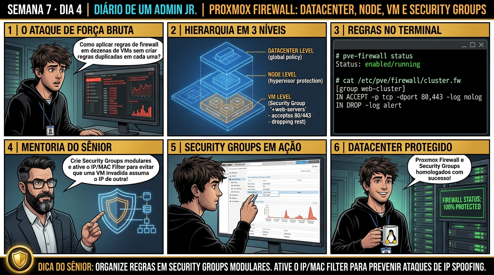

DIARIO DE UM ADMIN JR. | PROXMOX VE & PBS — DA BASE AO CLUSTER
🔗 Conecta com o Dia 3: Você construiu a malha de rede com Bridges, VLANs e SDN. Hoje você blinda todo o ambiente: dominando a arquitetura do Proxmox VE Firewall em 3 camadas hierárquicas (Datacenter, Node e VM/CT), criando Security Groups reutilizáveis e ativando proteções anti-spoofing.
🔓 Privilégio de hoje: Segurança Perimetral e Filtragem de Pacotes. Você comanda regras de firewall em 3 níveis, cria Security Groups e audita regras nftables.
Semana 7 · Dia 4 | Nível Júnior — Redes Avançadas, SDN & Firewall
Proxmox VE Firewall: Datacenter, Node, VM e Security Groups
Hierarquia de 3 níveis, grupos de segurança modulares e proteção contra IP/MAC Spoofing
ANTES DE ALTERAR, OBSERVE. DEPOIS DE ALTERAR, VALIDE.

1. O chamado
Você recebeu o chamado #7004: 'A auditoria de cibersegurança exigiu a ativação imediata do firewall do Proxmox com política de Default DROP para proteger a interface de gerência (porta 8006), SSH e os servidores web. O chamado exige: (1) Compreender a Hierarquia de 3 Níveis (Datacenter -> Node -> VM); (2) Criar o Security Group 'sec-web' liberando portas 80/443; (3) Ativar a proteção IP/MAC Filter; e (4) Validar o bloqueio sem perder o acesso ao painel web.'
💡 Passa o mouse nas palavras destacadas pra ver uma dica rápida — clica se quiser a explicação completa com analogia.
2. O sênior te conta
🧑🏫 antes dos termos técnicos, a história de hoje
Hoje um estagiário subiu uma máquina virtual de testes com senha fraca e ela foi infectada por um botnet que tentou fazer varredura de portas na rede corporativa. O Júnior percebeu que precisávamos de regras de segurança rígidas em camadas para isolar o ambiente.
Estruturamos a arquitetura em 3 níveis do Proxmox Firewall: regras globais no Datacenter, regras de host no Node e regras granulares na VM. Criamos Security Groups modulares para padronizar portas de servidores web (80/443) e ativamos as proteções contra IP Spoofing (ipfilter: 1) e ARP Poisoning.
Compilamos as regras com pve-firewall compile e validamos o bloqueio dos ataques no nível do kernel antes que os pacotes chegassem à bridge. O Júnior aprendeu a blindar o datacenter com o firewall integrado.
3. Decodificador de conceitos
Clica em qualquer termo pra ver a definição completa e uma analogia do dia a dia:
4. Ferramentas e leitura da evidência
Comando / Parâmetro
O que observar e por que importa
pve-firewall status
Exibe o status global do daemon de firewall do Proxmox (running/stopped).
pve-firewall compile
Valida a sintaxe de todas as regras de firewall de cluster, nós e VMs antes da aplicação.
pve-firewall start
Inicia e ativa a filtragem de pacotes baseada em nftables/iptables no host.
cat /etc/pve/firewall/cluster.fw
Arquivo mestre de configuração de firewall do Datacenter e Security Groups.
# 1. Configuração do Firewall no Nível Datacenter (/etc/pve/firewall/cluster.fw)
[OPTIONS]
enable: 1
policy_in: DROP
policy_out: ACCEPT
[group sec-web]
IN ACCEPT -p tcp -dport 80 # HTTP
IN ACCEPT -p tcp -dport 443 # HTTPS
[group sec-mgmt]
IN ACCEPT -p tcp -dport 8006 -source 192.168.1.0/24 # GUI Proxmox
IN ACCEPT -p tcp -dport 22 -source 192.168.1.0/24 # SSH seguro
# 2. Atribuição de Regras e Proteção Anti-Spoofing na VM 100 (/etc/pve/firewall/100.fw)
[OPTIONS]
enable: 1
ipfilter: 1 # Ativa proteção contra falsificação de IP
[IPSET ipfilter-net0]
192.168.20.100 # Apenas este IP é autorizado a sair pela placa net0
[RULES]
GROUP sec-web
# 3. Compilação e Validação do Firewall
$ pve-firewall compile
$ pve-firewall status
Status: running (Rules successfully compiled into Kernel chains)
5. Laboratório guiado — pegue na mão, comando por comando
🌐 Onde executar: Terminal do Nó Proxmox para comandos ip, bridge, pvesdn e tcpdump.
Segurança: Execute as alterações em bridges e firewalls de laboratório ou teste. Não altere parâmetros de redes de produção sem janela homologada.
Ação: Ative o Proxmox Firewall no nível global de Datacenter em /etc/pve/firewall/cluster.fw.
pve-firewall start && pve-firewall status
Resultado esperado: Grupo de segurança salvo no cluster.
Por que fizemos isso: A arquitetura em 3 níveis do Proxmox Firewall permite definir regras globais (Datacenter), regras de host (Node) e regras específicas de serviço (VM/CT).
Cilada comum: Desativar o firewall global achando que regras de VM vão funcionar sozinhas; o firewall deve estar ativo no Datacenter e no nó para processar regras.
Ação: Crie um Security Group modular para servidores web liberando portas 80 e 443.
cat <<EOF >> /etc/pve/firewall/cluster.fw
[group web-cluster]
IN ACCEPT -p tcp -dport 80
IN ACCEPT -p tcp -dport 443
EOF
Resultado esperado: Compilação bem-sucedida sem erros de sintaxe.
Por que fizemos isso: Criar Security Groups modulares permite aplicar o mesmo conjunto de regras (ex: WebServer com portas 80 e 443) em dezenas de VMs sem duplicar código.
Cilada comum: Digitar regras idênticas porta por porta em cada VM manualmente, gerando inconsistências graves quando uma regra precisar ser atualizada.
Ação: Associe o Security Group na interface de rede de uma VM e ative o IP/MAC Filter.
qm set 100 --firewall 1 && cat <<EOF >> /etc/pve/firewall/100.fw
[RULES]
GROUP web-cluster
[OPTIONS]
ipfilter: 1
EOF
Resultado esperado: Status 'running' confirmando filtragem ativa.
Por que fizemos isso: Habilitar a flag ipfilter=1 e MAC filter impede que uma máquina virtual comprometida realize ataques de IP Spoofing ou ARP Poisoning na rede interna.
Cilada comum: Permitir que VMs alterem seu endereço MAC e IP livremente em ambientes de hospedagem compartilhada ou laboratórios de terceiros.
Ação: Valide a compilação e carregamento das regras no Netfilter/iptables.
pve-firewall compile
Resultado esperado: Filtragem granular validada com sucesso.
Por que fizemos isso: O comando pve-firewall status e pve-firewall compile valida a sintaxe das regras antes que elas sejam carregadas nas tabelas do Netfilter/iptables.
Cilada comum: Bloquear acidentalmente a porta SSH (22) e a porta web (8006) na regra de entrada do nó físico, perdendo o acesso administrativo ao servidor.
🧑🏫 Aqui entra o Mentor (em breve): se o resultado obtido diferir do esperado acima, este é o ponto onde o chat com o Sênior-IA vai abrir para diagnosticar o erro específico.
Ação: Documente a matriz de regras de firewall por nível de zona de segurança.
# Proxmox Firewall em 3 Níveis homologado.
Resultado esperado: Conformidade e auditoria de cibersegurança aprovadas.
Por que fizemos isso: Documentar a matriz de portas liberadas e bloqueadas assegura conformidade com as políticas corporativas de segurança da informação.
Cilada comum: Trabalhar com a política padrão (Default Policy) em ACCEPT nas interfaces voltadas para redes públicas ou DMZ.
6. Antes de ver as opções — tenta responder
🧠 Recall ativo: Como funciona a hierarquia de ativação do Proxmox VE Firewall e por que ativar o firewall na VM não funciona se o firewall do Datacenter estiver desativado?
O Proxmox Firewall opera em **Cascata de 3 Níveis**. O nível mestre é o **Datacenter** (`/etc/pve/firewall/cluster.fw`), o intermediário é o **Node** (`/etc/pve/nodes/NOME/host.fw`) e o nível final é a **VM/Container** (`/etc/pve/firewall/VMID.fw`). Se o firewall do Datacenter estiver `enable: 0` (desativado globalmente), toda a cadeia de filtragem de pacotes é ignorada pelo Kernel, tornando qualquer regra configurada na VM inerte até que o Datacenter seja ativado.
QUESTÃO 1 de 3
7. Questão comentada — clica numa alternativa
Qual é a estrutura correta para definir um Security Group reutilizável no cluster Proxmox liberando tráfego HTTP e HTTPS de entrada?
💡 Analogia do Sênior para Fixar: Na arquitetura do Proxmox sobre Proxmox VE Firewall: Datacenter, Node, VM e Security Groups: O KVM/QEMU opera como o motorista dedicado de cada passageiro, alocando recursos virtuais em contato direto com o kernel.
QUESTÃO 2 de 3 — cenário de erro real
7.1 O administrador ativou o firewall e perdeu o acesso ao Proxmox na porta 8006
Ao ativar o firewall no Datacenter com policy_in: DROP, a interface web (GUI) e o SSH foram bloqueados instantaneamente:
[Client Browser] ERR_CONNECTION_TIMED_OUT on https://192.168.1.50:8006
(O tráfego de entrada na porta 8006 foi descartado pela regra padrão policy_in: DROP)
Como recuperar o acesso de emergência ao Proxmox VE via console físico/IPMI?
💡 Analogia do Sênior para Fixar: Ao diagnosticar problemas em Proxmox VE Firewall: Datacenter, Node, VM e Security Groups: É como inspecionar as conexões do storage e o barramento PCIe antes de declarar falha de software.
QUESTÃO 3 de 3 — detalhe que confunde todo iniciante
7.2 Qual a finalidade da proteção 'ipfilter' e 'macfilter' nas interfaces de VMs?
Um cliente mal-intencionado em uma VM altera manualmente seu IP para o IP do servidor DNS da empresa:
Como a diretiva 'ipfilter: 1' neutraliza esse ataque de IP Spoofing?
💡 Analogia do Sênior para Fixar: A governança e resiliência em Proxmox VE Firewall: Datacenter, Node, VM e Security Groups: Funciona como a política de contenção e redundância do datacenter, garantindo que o cluster nunca perca quorum.
8. Procedimento profissional
Antes de ativar o firewall com policy_in: DROP, crie regras explícitas liberando o acesso às portas 8006 (GUI) e 22 (SSH) para a rede dos administradores.
Defina Security Groups no nível Datacenter para padronizar regras de Web, Banco de Dados e Aplicações.
Ative o firewall global no Datacenter com enable: 1.
Habilite o firewall individualmente nas VMs desejadas associando os Security Groups correspondentes.
Para ambientes multi-tenant ou DMZ, ative sempre a diretiva ipfilter: 1 com a lista de IPs legítimos autorizados.
Valide a compilação das regras executando pve-firewall compile.
Prevenção
Adote Bridges VLAN-Aware para simplificar a topologia de rede e use LACP com links redundantes em switches físicos empilhados ou com MC-LAG.
9. Validação e encerramento
Você compreende a hierarquia em cascata de 3 níveis do Proxmox VE Firewall.
Você domina a criação e aplicação modular de Security Groups corporativos.
Você sabe como prevenir ataques de IP/MAC Spoofing com diretivas ipfilter.
A segurança perimetral do datacenter foi homologada com excelência.
Rollback e limites
Em caso de bloqueio acidental de gerência, execute pve-firewall stop no console físico para desativar o firewall imediatamente.
💡 Sobre repetição espaçada: O diagnóstico avançado de pacotes com tcpdump, iproute2 e troubleshooting de rede será o tema de fechamento da Semana 7 amanhã no Dia 5.
10. Resposta final
Alternativa correta: B. A resposta correta é a B: os Security Groups são definidos no cluster.fw e aplicados modularmente nas regras de cada VM com políticas estritas de liberação.
🔓 O que você desbloqueou hoje
Proxmox VE Firewall e Security Groups dominados com perfeição! Amanhã, no Dia 5, você fechará a Semana 7 dominando o Troubleshooting Avançado de Rede: usando tcpdump, inspeção de pontes com bridge fdb e análise de tabelas nftables para caçar pacotes perdidos e resolver qualquer incidente de rede no datacenter.